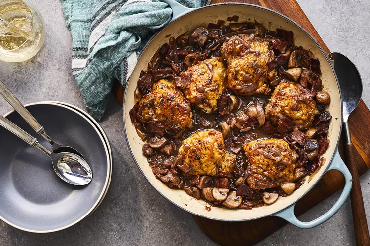

Recipes list
Chef John's Coq au Vin

Description
Coq au vin is a French chicken stew in which chicken thighs are braised in a red wine sauce with bacon,
mushrooms, and herbs. It may sound fancy, but it's really not difficult to make at home.
Ingredients
- Chicken:This coq au vin recipe starts with bone-in, skin-on chicken thighs.
- Seasonings: Season the chicken with salt and ground black pepper.
- Bacon: Bacon (and its drippings) add tons of meaty flavor and depth.
- Vegetables: You'll need mushrooms, onions, and shallots
- Flour and butter: All-purpose flour and butter thicken things up.
- Wine: Burgundy wine is traditionally used, but you can use anything made with Pinot Noir grapes.
- Thyme: Fresh thyme adds a pop of color and flavor.
- Broth: Use store-bought or homemade chicken broth.
Steps
- Season the chicken, cook the bacon, and cook the chicken in the bacon drippings.
- Sauté the vegetables until they're caramelized.
- Add flour and butter to the veggie mixture.
- Transfer to the oven and cook for 30 minutes, basting with pan juices.
- Return the pan to the stove and reduce the juices until the sauce thickens.
What to Serve With Coq Au Vin
Serve coq au vin with starchy side dishes that can soak up all that delicious sauce. Try mashed potatoes, rice,
French bread, or egg noodles.
How to Store Coq Au Vin
Allow your coq au vin leftovers to cool, then transfer them to an airtight container. Store them in a shallow,
airtight container in the refrigerator for up to five days. Reheat in the microwave or on the stove.
Recipes list